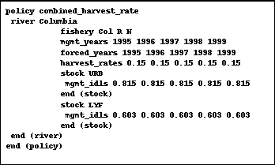

*.msc file (Fig. 2.4). The *.msc file identifies stocks with annual estimates of year-specific maturation schedules and provides the name of the file that actually contains the maturation data (.MAT). The *.mat, *.bse, and *.stk files must correspond to a particular Model calibration; you must insure that the same maturation schedules are used for both calibration and model runs so that results will be compatible. You should enter "NONE" if the model was calibrated with no annual variation in maturation schedules.
Fig. 2.4 Sample *.msc file.
*.mat file is used in conjunction with the *.msc file. See "*.msc File Structure" above. The information appears in blocks in the file (Fig. 2.5). Each block corresponds to a year and begins with the year in the first column followed by rows corresponding to each stock. Subsequent values on each row are the maturation rates and adult equivalents for the stock.
Fig. 2.5 Sample *.mat file.
*.evo files (Fig. 2.6) contain estimates of stock and brood specific productivity scalars (EV scalars) up through the last year of available data and then uses averages for all subsequent years. You can modify the EV's for years following the last estimated year using the dialog boxes (see "Dialog Boxes") opened from the drop-down menus (see "Drop-Down Menus") or by modifying the *.evo file with a text editor. EV values are approximately log-normally distributed and future versions of the model will incorporate this feature which will be useful for running the model in Monte Carlo mode when the model has to select a value for the EV for each stock for each year. The standard method is to "Bootstrap" the value from the historical values.
Fig. 2.6 Sample *.evo file.
*.idl files. Currently, this file (see Fig. 2.7) only includes estimates of inter-dam loss for Columbia River stocks. Since most inter-dam loss occurs after all fisheries, inter-dam loss is essentially treated as escapement when calculating ocean and terminal area harvest rates. Changes in estimates of inter-dam loss rates can be assessed by modifying this file. It should be noted, however, that the numbers in the *.idl files are actually estimates of total adult survival past all Columbia River dams. Estimated IDL values are used through the present year, then an average of all estimated values is used for future years.
Fig. 2.7 Sample *.idl file.
For each stock, sets of 4 data lines:
*.bse file)
*.enh file (see Fig. 2.8) has information on changes in enhancement schedules for hatchery and natural supplementation programs. Modifications of the *.enh file can be made either: (1) to incorporate actual changes in the enhancement schedule; (2) to assess possible changes in enhancement. All enhancement changes are relative to average levels during the 1979-1981 base period.
Fig. 2.8 Sample *.enh file
*.cnr file (see Fig. 2.9) is described below.
Fig. 2.9 Sample *.cnr file
Sets of data for each CNR fishery
Selectivity scalars are used to compensate for changes in fleet behavior during CNR restrictions. Scalar values are all relative to 1.0 (no change). Values in the example above indicate a 66% reduction in impacts on legal-sized chinook retention.
Currently, there are three different methods that can be used to calculate CNR mortality. Each method requires different types of data. The section that follows details how to describe this data in the *.cnr files.
1, 0, CNR RT 1990
Different CNR mortality methods can be used to determine how mortalities are calculated during the calibration period. during the simulation period, however, the current version of CRiSP Harvest uses the "RT Method" exclusively.
Method 1 ("Season Length Method") can be used to model past seasons when only information about season length is available. This method uses the ratio of regular season length to the CNR season length.
1, 1, 60, 9, Season length/legal season/ CNR days for 1990
Method 2 ("Encounter Rate Method") is used when specific data on encounter rates are available. To use this method, you must enter the following data.
1, 2, 18225, 18578, 248000, Enc./Est of CNR enc/year = 1990
*.pnv file (see Fig. 2.10) is created for each fishery in which one or more changes in the minimum size limit have occurred since the base period. The proportions in a *.pnv file replace those proportions in the *.bse file for each fishery specified by a *.pnv file.
Fig. 2.10 Sample*.pnv file
*.fp files are used for detailed Fishery Policy (Harvest Rate) scalars that alter the impact of a given fishery on the stocks on a year-by-year basis. The format is to place all of the FP values in a block for a year. Each year has a separate block. Within each block the 30 rows are for the 30 stocks and each of the 25 columns is one of the fisheries. There are no other flags, values or tokens in this file.
*.cei files (see Fig. 2.11) is used to set catch ceilings which are the primary means selected by the PSC to reduce stock exploitation rates. The *.cei file is used: (1) to specify fisheries with ceilings; (2) to set ceiling levels (catch levels); and (3) to allow you to force Model catches to equal the ceiling.
Fig. 2.11 Sample *.cei file.
*.fp file. Under conditions of low abundance, catches will be less than the ceiling level if base period harvest rates are maintained. If the ceiling is forced, then the harvest rate in the fishery is allowed to increase so that the ceiling is reached. In most circumstances, all ceilings are forced all years.
*.monte file (see Fig. 2.12) uses a token based structure and hence the specific keywords are expected by the file parser. The *.monte file is used to configure the model for Monte Carlo simulations. See "Running the model in Monte Carlo mode".
Fig. 2.12 Sample *.monte file.
If the "Bootstrap" method is used, then for each year during the simulation period (i.e., future years) this method randomly selects a year from the calibration period (e.g. 1979-1991), with each calibration year having equal probability of being selected. For each stock, the program then sets the EV Scalar for the simulation year equal to the EV Scalar value for that stock in the selected calibration year. For example, if the simulation year is 2002 and the calibration period is 1979-1991, the program randomly selects a year between 1979 and 1991, say 1983. For each stock, the program then sets the EV Scalar in year 2002 to the same value used in year 1983. The basic idea of this method is to allow for correlations between stocks. Instead of letting the EV Scalars vary independently, this methods says "lets make future year 2002 look just like year 1983 for all stocks."
If the "Log Normal Indep." method is used, then for each year during the simulation period (i.e., future years), the model randomly selects EV Scalars for each stock from a log normal distribution unique to that stock. The two parameters defining each stock's log normal distribution are included in the *.evo file and typically are estimated from the calibration period EV Scalars computed during the calibration process. This method allows the EV Scalars for each stock to vary independently.
*.config file (see Fig. 2.13) is used to configure output from Monte Carlo runs.
Fig. 2.13 Sample *.config file.
*.bse file.
*.riv file (see Fig. 2.14, Fig. 2.15 and Fig. 2.16) uses a token based structure and hence the specific keywords are expected by the file parser. The *.riv files are used to specify the management parameters controlling in-river harvest.
Fixed Escapements, Weak Stock Management
Fig. 2.14 Sample *.riv file for fixed escapement, weak stock management.
Fixed Escapements, Combined Stock Management
Fig. 2.15 Sample *.riv file for fixed escapement, combined stock management.
Fixed Escapements, Fixed Harvest Rate Management
Fig. 2.16 Sample *.riv file using combined fixed harvest rate management.
